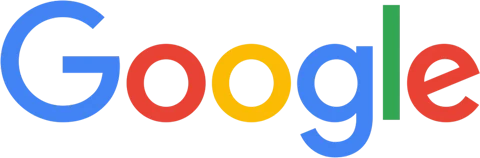

Il audite votre site gratuitement et vous remet un audit GEO, avec une feuille de route d'actions concrètes, propres à votre site et à votre secteur.
Les requêtes de niche qualifiées sur lesquelles vous n'apparaissez pas encore, et que vos acheteurs posent déjà aux IA.
Pourquoi votre site ne ressort pas dans les réponses : ce qui manque sur vos pages, et ce que les moteurs n'y trouvent pas.
Comment vos concurrents s'y positionnent, sur quelles sources ils s'appuient, et par où les dépasser sur votre marché.
Les actions à mener, dans l'ordre, avec ce que chacune peut rapporter.
Ils nous ont fait confiance
Résultats
Nous sommes fiers d'avoir contribué à ces projets
Ce qu'ils en disent sur

FAQ
Qu'est-ce que le GEO ?
Le GEO, pour generative engine optimization, consiste à faire en sorte qu'une entreprise soit citée dans les réponses des moteurs génératifs : ChatGPT, Perplexity, Gemini, Claude, Copilot, ou les AI Overviews de Google. Quand quelqu'un demande à une IA quel prestataire choisir sur votre marché, elle cite des noms. Le GEO, c'est le travail qui fait que le vôtre en fasse partie.
En quoi est-ce différent du référencement classique ?
Le référencement classique vise une position dans une liste de liens. Le visiteur voit dix résultats et choisit. Un moteur génératif, lui, ne propose pas de liste : il donne une réponse, et cite deux ou trois sources. Il n'y a pas de deuxième page, pas de dixième place. Vous êtes dans la réponse ou vous n'existez pas. Les leviers se recoupent en partie, la structure technique et l'autorité comptent dans les deux cas, mais ce que le modèle retient d'une page n'obéit pas aux mêmes règles qu'un classement.
Le GEO a-t-il un intérêt réel en B2B ?
C'est même là qu'il est le plus rentable, pour une raison simple : en B2B, l'achat commence par une phase de recherche longue, et cette phase se déplace vers les IA. Un directeur qui cherche une ESN, un logiciel ou une agence pose aujourd'hui sa question à un modèle avant d'ouvrir Google. Avec des cycles longs et des paniers élevés, un seul rendez-vous gagné par ce canal peut couvrir plusieurs mois de prestation. C'est l'arithmétique qui rend le B2B particulièrement adapté.
Et en B2C ?
L'intérêt est différent mais réel. En B2C, les volumes sont massifs et les décisions plus rapides, donc une citation dans une réponse pèse surtout sur la notoriété et sur la comparaison. Quand un particulier demande « quelle est la meilleure marque pour… », la réponse qu'il obtient oriente sa liste de candidats avant même qu'il n'arrive sur un site. Le travail porte alors moins sur quelques requêtes commerciales que sur la couverture d'un marché entier.
Faut-il arrêter le référencement classique ?
Non, et ce serait même contre-productif. Les moteurs génératifs s'appuient en grande partie sur ce qu'ils trouvent sur le web, et les pages bien positionnées dans Google ont statistiquement plus de chances d'être reprises dans une réponse. Un socle technique sain, des contenus structurés et une autorité établie servent les deux à la fois. Nous ne remplaçons pas votre référencement : nous l'étendons à des surfaces qu'il ne couvrait pas.
Au bout de combien de temps voit-on quelque chose ?
Les premiers déplacements se mesurent en semaines sur les moteurs génératifs, qui réévaluent leurs sources plus souvent qu'un index classique ne se réorganise. Mais une position stable se construit sur plusieurs mois. Méfiez-vous de quiconque vous promet une citation garantie sous trente jours : personne ne contrôle ce qu'un modèle décide de reprendre.
Comment mesure-t-on le retour sur investissement ?
En relevant, chaque semaine, ce que les moteurs répondent sur un corpus de questions d'achat propres à votre marché, et en suivant trois choses : la fréquence à laquelle votre nom apparaît, les sources que le modèle reprend pour parler de vous, et les demandes entrantes qui en découlent. Une citation qui ne déclenche aucun contact n'a pas de valeur. C'est pourquoi nous raisonnons en rendez-vous et en montants, pas en positions.
Que contient l'audit gratuit ?
Un relevé de ce que les principaux moteurs répondent aujourd'hui aux questions d'achat de votre secteur, la liste des concurrents qu'ils citent à votre place, les sources sur lesquelles ils s'appuient pour le faire, et une estimation chiffrée de ce que représenterait une place dans ces réponses. L'échange dure une trentaine de minutes et se fait directement avec le consultant qui suivrait votre dossier.